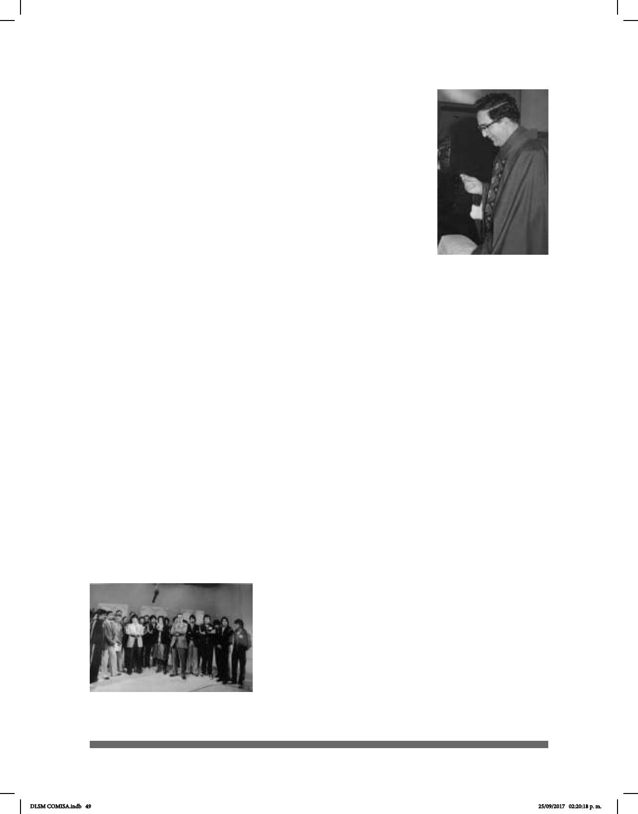

49
en nuestro país. Es la primera escuela con un programa con
Lengua de Se
ñas Mexicana para niñas y niños sordos y está incorporada a la
SEP (Secretaría de Educación Pública).
En 1969, la Escuela Nacional de Sordos y el Instituto Nacional de
Audiología y Foniatría se fusionaron y constituyeron el Instituto
Nacional de la Comunicación Humana (INCH), hoy extinto. Había
sido creado para atender y tratar patologías relacionadas con
la comunicación, entre ellas los problemas de audición. En su
momento fue inspiración de instituciones y escuelas dedicadas
a la enseñanza del sordo. Anteriormente fue el Instituto de
Audiología en 1954 y fue un internado de jóvenes sordos, quienes
acudían de todos los estados de la República Mexicana, pues ahí
se enseñaban varios ocios en diferentes talleres como imprenta,
belleza, electricidad, dibujo, carpintería, entre otros. Cabe señalar que muchos de los
planos de la Ciudad de México del servicio de agua y de electricidad fueron realizados
por sordos.
En 1970 se estableció el “Día Nacional de Personas Sordas”. Se incitó a crear la
celebración de “El día del sordomudo”, ahora “Día de la Fraternidad del Sordo”, que
anualmente se festeja el 28 de noviembre, pues es la fecha en que se fundó la Escuela
Nacional de Sordomudos. Se festeja este día y se realiza otra celebración el domingo
siguiente en el Monumento Hemiciclo a Juárez, sobre la calle que lleva el mismo nombre,
en donde se reúnen sordos adultos que realizan una hermosa convivencia entre amigos,
prometiendo volver a encontrarse en el mismo lugar al año siguiente.
Don Ignacio Sierra fue un impulsor y luchador incansable por la educación y pionero del
Día Nacional de la Fraternidad del Sordo el día 28 de noviembre de 1970.
En 1970 se creó la Dirección General de Educación Especial, que estableció Centros de
Rehabilitación y Educación Especial (CREE).
En 1972, el INCH inició la formación académica de Terapistas en Comunicación Huma
na y en 1985 obtuvo el reconocimiento ocial de la SEP como licenciatura. A partir de
1973 iniciaron los cursos de especialización en Medicina de la Comunicación Humana,
ahora Audiología, Foniatría y Otoneurología.
En 1976 el gobierno le ofreció a María Esther Orozco
Godínez, profesora normalista, una beca que consistió
en un viaje a Washington, D.C. para ir a la Universidad de
Sordos. Ella estuvo con varios doctores americanos que
la admiraron mucho por ser profesora sorda de Lengua
de Señas Mexicana y Lengua de Señas Americana,
razón por la cual le dieron un reconocimiento.
En 1978 surgió el proyecto de Grupos Integrados
Especícos para Hipoacúsicos (GIEH) en la SEP, con
Padre Angel Alegre
Conde
Equipo de trabajo de Octavio
Herrera Orozco
DLSM COMISA.indb 49 25/09/2017 02:20:18 p. m.